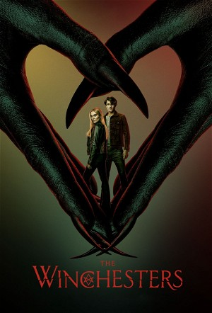

The Winchesters (2022)
DramaAdventureActionSuspense
| Year | 2022 |
|---|---|
| Rating | TV-14 |
| Status | Completed |
| Seasons | 1 |
| Episodes | 13 |
| Genre | Drama, Adventure, Action, Suspense |
Before Sam and Dean, there were their parents, John and Mary. Told from the perspective of narrator Dean Winchester, THE WINCHESTERS is the epic, untold love story of how John Winchester met Mary Campbell and put it all on the line to not only save their love, but the entire world. When John returns home from fighting in Vietnam, a mysterious encounter sparks a new mission to trace his father’s past. In his journey, he crosses paths with 19-year-old demon hunter Mary, who is also searching for answers after the disappearance of her own father. Together, the two join forces with young hunter-in-training Latika and easygoing hunter Carlos to uncover the hidden truths about both their families.
Episodes
Season 1
| # | Title | Air Date | Synopsis |
|---|---|---|---|
| 1 | Pilot | 2022-10-11 | When John returns home from fighting in Vietnam, a mysterious encounter sparks a new mission to trace his father's past. In his journey, he crosses paths with 19-year-old demon hunter Mary, who is also searching for answ |
| 2 | Teach Your Children Well | 2022-10-18 | John and Millie are on different pages about his new interest in hunting and Ada tries to bridge the gap. Mary follows a trail from her father that points to the disappearance of a teenage boy in Topeka. Meanwhile, Carlo |
| 3 | You're Lost Little Girl | 2022-10-25 | When Mary’s next-door neighbor mysteriously goes missing, she and John start digging into the disappearance. During their investigation, John unexpectedly reunites with someone from his past. Carlos and Ada bond as they |
| 4 | Masters of War | 2022-11-01 | After the details of a veteran’s death don’t add up, Carlos brings everyone in to investigate and he shares a detail about his past that makes John see him in a new light. Mary finds an unexpected ally who has been hot o |
| 5 | Legend of a Mind | 2022-11-15 | Hidden secrets from Ada’s past comes to light when the gang goes undercover to look into a suspicious death. Still reeling from the last Hunt, Millie asks Mary to keep an eye on John as they split off from the others to |
| 6 | Art of Dying | 2022-11-22 | Mary gets a call from an old family friend who’s looking for some help but when the team arrives, they learn that some crucial details were left out. While Latika struggles with being a Hunter and questions her future wi |
| 7 | Reflections | 2022-12-06 | The Hunt heats up and Mary and John find trails that lead back to their fathers. Carlos helps Mary investigate where the Akrida might be hiding but they discover more than they bargained for. Meanwhile, Millie steps in t |
| 8 | Hang on to Your Life | 2023-01-24 | With some intense emotions still lingering after their high stakes recovery mission, Mary and John stay close to home to watch over a newly returned Samuel Campbell. When Latika and Carlos split off to investigate the de |
| 9 | Cast Your Fate to the Wind | 2023-01-31 | When Vampires make their way into Lawrence, Carlos corrals the gang to find out why. Latika's weeks of sorting through the Men of Letters clubhouse provides vital information when John gets a scary glimpse into the futur |
| 10 | Suspicious Minds | 2023-02-07 | While Carlos talks through a problem in his personal life, it gives Latika a new idea about how to find the Akrida Queen. Millie’s new security system for the Clubhouse proves helpful when Mary and John find an unexpecte |
| 11 | You've Got a Friend | 2023-02-21 | In the aftermath of the fight with Golem, Carlos, Mary and Latika are cleaning the clubhouse when they hear a noise from outside. They creep out to investigate and spot a figure but can't quite make it out until it turns |
| 12 | The Tears of a Clown | 2023-02-28 | Mary and John's tense discussion is interrupted when Carlos and Latika arrive to discuss a mystery involving a creepy clown. Meanwhile, Ada makes an interesting discovery. |
| 13 | Hey, That's No Way to Say Goodbye | 2023-03-07 | John receives a message from a mysterious stranger. Meanwhile, Carlos, Latika and Ada work together to find answers, but time is running out. Lastly, Mary and John have a warm but awkward reunion. There is a lot to unpac |